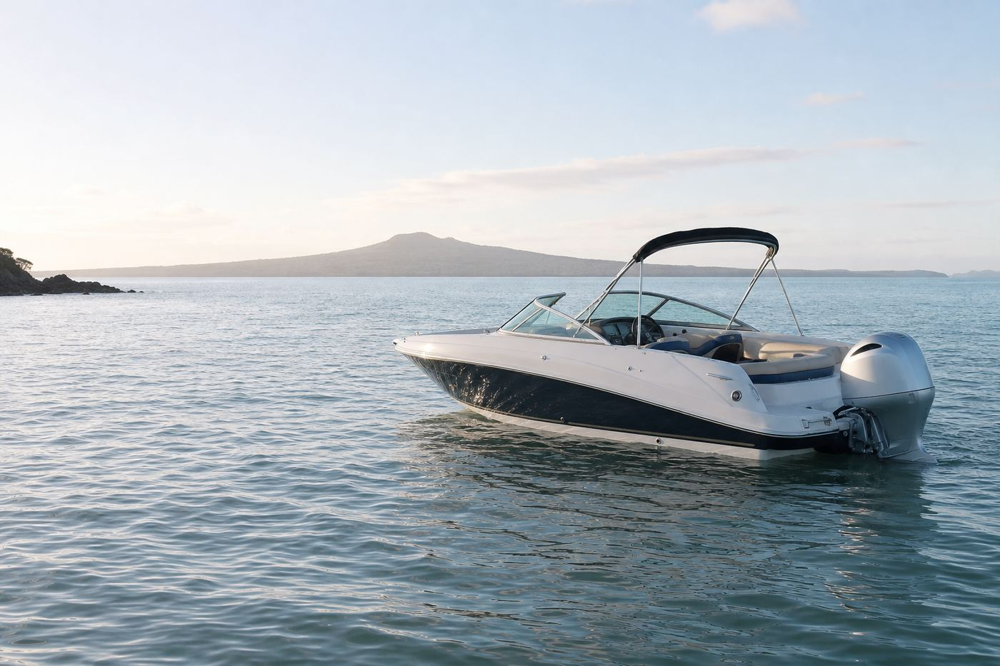
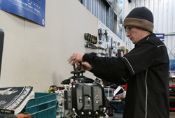

Holiday Outboards is Auckland's trusted Honda Marine dealer. From new Honda outboards to second-hand engines, parts, and full workshop service — we've been keeping Kiwis on the water for over 58 years.

Full range 2.3–250hp. Authorised dealer with factory warranty, rigging and service.

Quality pre-owned outboards and a huge range of parts for all makes — large and small.

Fully equipped workshop with dyno-tester. Free quotes. All makes serviced and repaired.

209 Bush Rd, Albany. Workshop: (09) 448 1650. Mon–Fri 8–5, Sat by appointment.